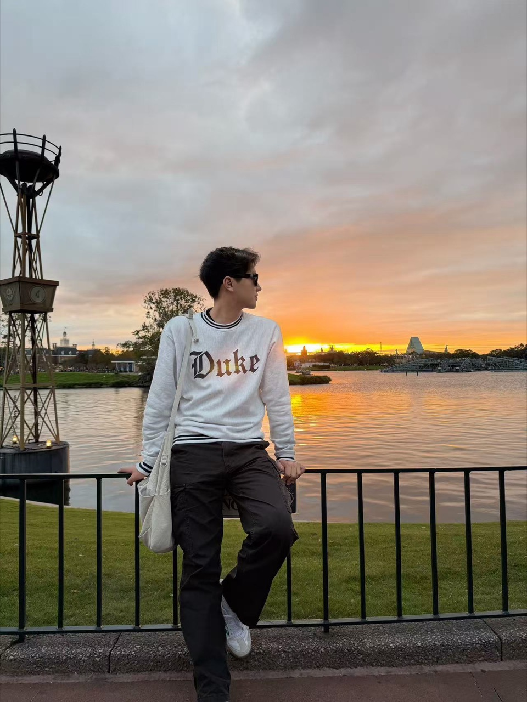

EMNLP 2026 · System Demonstrations · Budapest · pp. 178–188 EMNLP 2026 · System Demonstrations · 布达佩斯 · 第 178–188 页
Research Assistant, Duke CEI Lab · MEng in ECE, Duke University Duke CEI Lab 研究助理 · 杜克大学电子与计算机工程硕士
When an AI assistant says done, how do we know it really did what the user wanted?
当 AI 助手说 办好了，我们怎么知道它真的完成了用户想做的事？
That is the question I work on. I am a research assistant at the Duke CEI Lab, where I work with Yueqian Lin and Prof. Yiran Chen on multimodal AI assistants. I finished my MEng in Electrical and Computer Engineering at Duke in May 2026. 这就是我在研究的问题。我是 Duke CEI Lab 的研究助理，与 Yueqian Lin 和陈怡然教授合作，研究多模态 AI 助手。2026 年 5 月，我从杜克大学电子与计算机工程硕士项目（MEng）毕业。
Applying to PhD programs for Fall 2027正在申请 2027 年秋季入学的博士项目

So far I have worked on safety evaluation for multimodal models. I am a co-first author of MUSE, a platform that records every turn of an interaction, so that researchers can go back and see what happened. The paper appeared at EMNLP 2026.
In the long term, I want to build a personal assistant that works across devices, a little like JARVIS. A central agent coordinates small agents on your watch, phone and computer, and they share conversation memory and task progress. When you move to another device, you keep talking to the same assistant, and it continues the same task.
到目前为止，我主要做多模态模型的安全评测。我是 MUSE 的共同第一作者。这个平台保存一次交互里每一轮的记录，让研究者可以回看到底发生了什么。论文发表在 EMNLP 2026。
长期来看，我想做一个能跨设备工作的个人助手，有点像 JARVIS：由一个中央 agent 协调手表、手机和电脑上的小 agent，它们共享对话记忆和任务进度。换一台设备，你仍然可以和同一个助手接着说、接着做。
EMNLP 2026 · System Demonstrations · Budapest · pp. 178–188 EMNLP 2026 · System Demonstrations · 布达佩斯 · 第 178–188 页
A browser-based platform for safety evaluation of multimodal LLMs. It saves each attack run as a complete record: the configuration, every turn, the media that was sent, the model’s responses and the safety judgments. You can replay a multi-turn interaction across text, image, audio and video, and see at which turn the model’s behavior changed.
基于浏览器的多模态大模型安全评测平台。它把每一次攻击运行完整保存下来，包括配置、每一轮对话、发送的媒体、模型的回答和安全评判。你可以回放跨文本、图像、音频和视频的多轮交互，查看模型的表现在哪一轮发生变化。
A Linux daemon that starts a backup automatically when you plug in a USB storage device. It can restore files from a snapshot or rebuild a partition table. Personal project, Feb – Apr 2026.
一个 Linux 守护进程：插入 USB 存储设备后自动开始备份，可以从快照恢复文件，也可以重建分区表。个人项目，2026.02 – 2026.04。
An alumni management system built for a school. It has two clients: a web app and a WeChat Mini Program.
为一所学校开发的校友管理系统，有网页端和微信小程序两个客户端。
Research on multimodal agents and safety evaluation, with Yueqian Lin and Prof. Yiran Chen. Co-first author of MUSE, presented at EMNLP 2026 in Budapest.
与 Yueqian Lin 和陈怡然教授合作，研究多模态智能体和安全评测。MUSE 共同第一作者，论文在布达佩斯的 EMNLP 2026 展示。
Built Spring Boot services and more than 15 REST APIs for a drone flight management platform. Handled concurrent authentication, and used Kafka for asynchronous tasks and notifications.
为无人机飞行管理平台开发 Spring Boot 服务和 15 个以上 REST API，处理并发鉴权，并用 Kafka 实现异步任务与通知。
Wrote database initialization and deployment scripts, built end-to-end black-box tests, and took part in release deployment and troubleshooting.
编写数据库初始化与部署脚本，开发端到端黑盒测试，参与上线部署和故障排查。
Master of Engineering (MEng), Electrical and Computer Engineering · GPA 3.71/4.0
电子与计算机工程，工程硕士（MEng）· GPA 3.71/4.0
BSc, Computer Science · GPA 3.74/4.0 · First Class Honours, University of Leeds
计算机科学，理学学士（BSc）· GPA 3.74/4.0 · 利兹大学一等荣誉学位
I have played football since second grade, and I still play. I have played in school, district, city and provincial competitions.
My favorite positions are left winger and attacking midfielder. I prefer the left wing to centre-forward, because I like the way Neymar plays. In high school I played centre-back for the school team. In college, my department team needed a defensive midfielder, so I moved back to protect the back line, support my teammates and distribute the ball. I was captain of that team for two years, starting in my third year, and I made many friends there.
I support FC Barcelona, and Messi is my favorite player.
我从小学二年级开始踢球，一直踢到现在，踢过校级、区级、市级和省级比赛。
我最喜欢踢左边锋和前腰。比起中锋，我更喜欢左边锋，因为我喜欢内马尔的踢球风格。高中在校队踢中后卫；大学时院队缺后腰，我就回撤，负责护住后防线、接应队友和调度出球。从大三开始，我连续两年担任院队队长，也在队里认识了很多朋友。
我是巴萨球迷，最喜欢的球员是梅西。
Outside my main research, I am curious about what AI can do with music and with football.
主线研究之外，我对 AI 在音乐和足球上能做什么也很感兴趣。
My usual run is 10 km in one hour, at a pace of 6 min/km.
我一般是 6 分配，一个小时跑 10 公里。
A name I once gave myself: willing without the g, plus an x for unlimited possibilities. People often read it as “William.” Now I go by Jude.
这是我以前给自己起的名字：取自 willing，去掉 g，再加一个代表无限可能的 x。结果大家经常把它读成 William。现在我的英文名是 Jude。